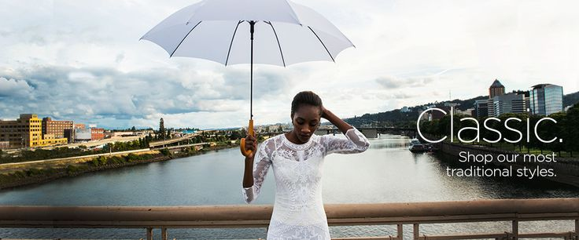

The Birth of the Bubble Umbrella
In 1970, ShedRain introduced the iconic bubble umbrella, revolutionizing rain protection with its deep-domed, transparent design. Inspired by the need for better visibility during downpours, this umbrella quickly became a favorite for fashion enthusiasts and practical users alike.
Engineering Windproof Umbrellas
ShedRain took umbrella innovation to new heights with the development of windproof technology. Our engineers crafted vented canopies and reinforced frames to ensure umbrellas remain intact even during the strongest gusts, making stormy days more manageable.

Commitment to Sustainability
In recent years, ShedRain has focused on sustainability by introducing eco-friendly materials and processes. From recycled canopy fabrics to reduced packaging, we strive to make our products as kind to the environment as they are functional for users.
Customer Moments
Our customers have shared countless heartwarming stories, from staying dry at outdoor weddings to finding the perfect travel companion. Each umbrella holds a memory, proving that ShedRain is more than just a brand—it’s part of life’s precious moments.